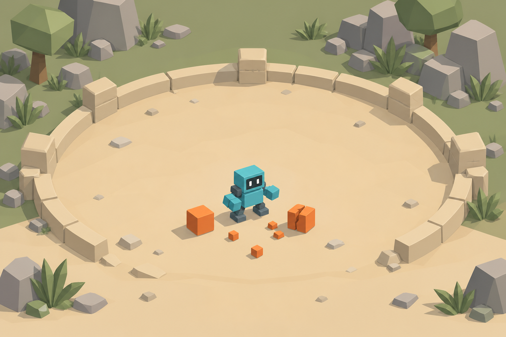

Игровые действия
Контур, короткий выступ и отклик на нажатие.
НАШ ИГРОВОЙ UI KIT
Контрастный. Читаемый. Свой у каждой игры.

ОБЩАЯ ОСНОВА
Игра выбирает нужное и собирает свои экраны.
Контур, короткий выступ и отклик на нажатие.
Выбор, перезарядка и блокировка видны сразу.
Иконка, эффект, изменение значения и цена.
20 → 25
Крупные числа и узнаваемые силуэты.
Kit задает кнопки, состояния и правила. Тема задает палитру, форму и шрифт. Игра задает композицию, мир и механику.
20 → 25
2,0 → 2,5
Выбери улучшение
Уровень 7 пройден